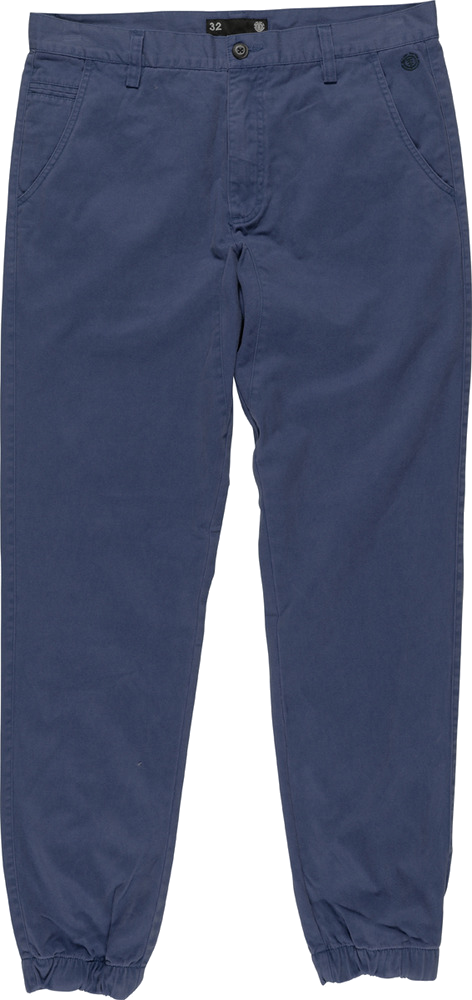

|  | Conroy Bleu Ici chez Element, nous pensons que les pantalons sont à la mode ce que les fondations sont à l'architecture. À la conception du jogging Conroy, nous avons voulu qu'il puisse assurer dans un environnement naturel comme dans une ambiance plus métropolitaine. Le Conroy se pose juste sous la taille, plutôt près du corps au niveau de l'assise et des cuisses, et se rétrécit à la cheville avec finition élastique. |
| 75 € |
| Utilisateur 8475 |
Un pantalon qui combine jean, chino et jogging, un must du confort et du pratique ! |
| Utilisateur 3947 |
Super pantalon, j'me sens super bien dedans ! On dirait un jogging avec le style d'un chino ! J'adoooore ! |